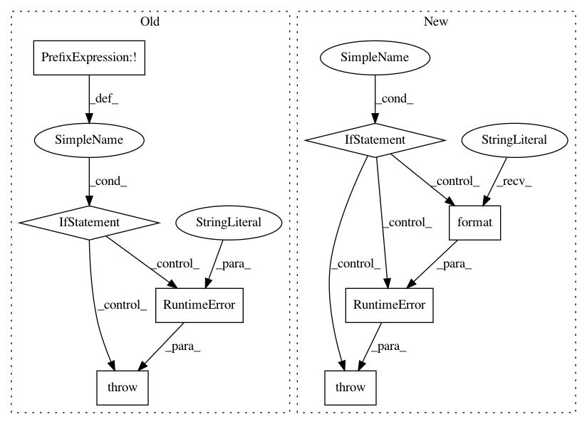

8204717eed71923f1e14fa6bd17ca4588c140c09,rllib/evaluation/rollout_worker.py,RolloutWorker,__init__,#RolloutWorker#Any#Any#Any#Any#Any#Any#Any#Any#Any#Any#Any#Any#Any#Any#Any#Any#Any#Any#Any#Any#Any#Any#Any#Any#Any#Any#Any#Any#Any#Any#Any#Any#Any#Any#Any#,132
Before Change
"Creating policy evaluation worker {}".format(
worker_index) +
" on CPU (please ignore any CUDA init errors)")
elif not tf1.test.is_gpu_available():
raise RuntimeError(
"GPUs were assigned to this worker by Ray, but "
"TensorFlow reports GPU acceleration is disabled. "
"This could be due to a bad CUDA or TF installation.")
else:
self.policy_map, self.preprocessors = self._build_policy_map(
policy_dict, policy_config)
After Change
"Creating policy evaluation worker {}".format(
worker_index) +
" on CPU (please ignore any CUDA init errors)")
elif (policy_config["framework"] in ["tf2", "tf", "tfe"] and
not tf.config.list_physical_devices("GPU")) or \
(policy_config["framework"] == "torch" and
not torch.cuda.is_available()):
raise RuntimeError(
"GPUs were assigned to this worker by Ray, but "
"your DL framework ({}) reports GPU acceleration is "
"disabled. This could be due to a bad CUDA- or {} "
"installation.".format(
policy_config["framework"],
policy_config["framework"]))
self.multiagent: bool = set(
self.policy_map.keys()) != {DEFAULT_POLICY_ID}
if self.multiagent:
In pattern: SUPERPATTERN
Frequency: 3
Non-data size: 8
Instances
Project Name: ray-project/ray
Commit Name: 8204717eed71923f1e14fa6bd17ca4588c140c09
Time: 2020-07-16
Author: sven@anyscale.io
File Name: rllib/evaluation/rollout_worker.py
Class Name: RolloutWorker
Method Name: __init__
Project Name: pytorch/fairseq
Commit Name: 29b8a4deb58ca9798b61690a31de1ea57de92122
Time: 2020-05-29
Author: yqw@fb.com
File Name: fairseq/trainer.py
Class Name: Trainer
Method Name: _check_grad_norms
Project Name: vatlab/SoS
Commit Name: 6ca46d807b12bb34e46cf83b83afa4abc45d797c
Time: 2016-12-11
Author: ben.bog@gmail.com
File Name: sos/sos_step.py
Class Name: Base_Step_Executor
Method Name: _run